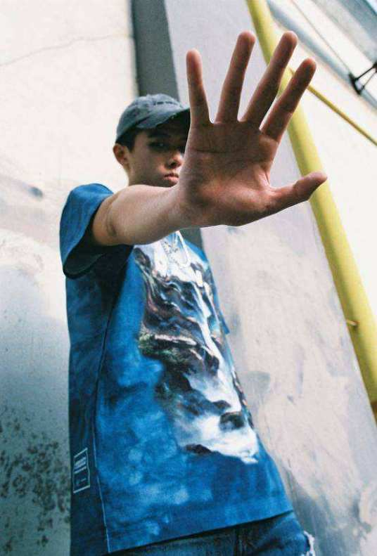
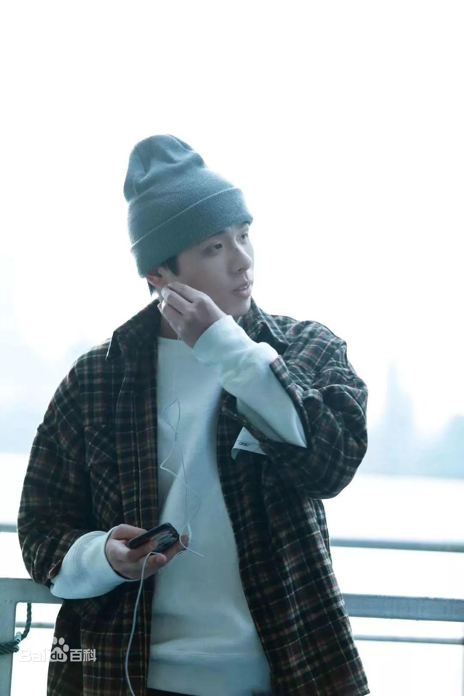
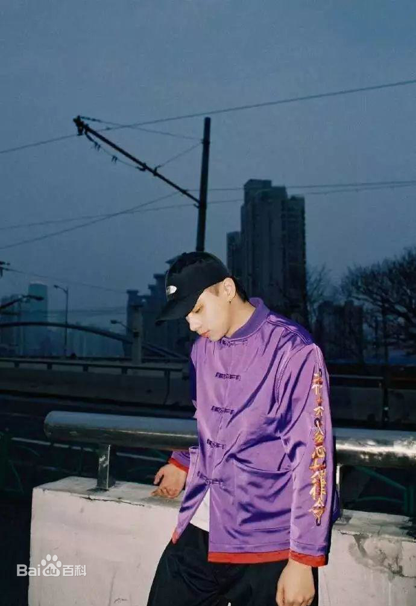

法老，本名孙权，1992年10月11日出生于浙江省海宁市，中国内地说唱歌手，说唱厂牌“活死人”创始人。
2016年，创立“活死人”说唱厂牌。2018年10月23日，发布个人原创专辑《生于未来》。2017年3月14日，发布单曲《亲密爱人2017》。 2019年3月31日，发布个人原创mixtape《上学嗨mixtape》；11月8日，发布个人原创单曲《悲伤的大象》。 2020年6月，作为制作人参加芒果TV说唱音乐综艺《说唱听我的》。 2020年10月22日发布原创专辑《科幻小说》。
法老在海宁一中读书的时候，萌发了说唱的梦想。在那时，他接触到了潘玮柏的歌曲。其中最为印象深刻的是《快乐崇拜》，并使法老爱上了这种风格的音乐。
渐渐的他开始尝试听更多的这种风格的音乐，也逐渐去模仿。2008年，在高三暑假期间，他进行了自己第一次创作；年末，他选择了走上说唱的道路。

在说唱路上前行，他也克服了许多的阻碍。他和朋友把身边值钱的东西卖掉，凑齐了路费，但这些钱在上网的时候被人偷走，没有钱的法老一行人被迫在冬天解散。
随后在四月法老认识了安迪、战火，他们给法老介绍了一个工作酒吧驻唱，于是得此才能勉强维持生活。但在酒吧驻唱的日子并不好过，他为了合同只能继续坚持。
时隔不久法老出了一张自己的专辑，可惜没人气没流量的他，这张专辑收听惨淡。然而随后的一场车祸这让本就没钱的法老又欠了外债，这使得让本来就很糟糕的生活变得更糟。
在走投无路的时候法老遇到了老乡，他帮助法老还了外债，之后法老把他的寝室当做音乐基地。
起初家人完全不支持他，之后便让他自己自由发展，再到后来相对支持，他从旁人的无法理解到慢慢地接受、认可。
法老也曾在五金店上过班。他最艰难的时刻是一开始连录音常识都没有，专门去嘉兴找现在的师父，学了两年的混音，从住四平方米公寓到睡没有窗的录音棚，什么样的环境都住过。
2012年，法老举办第一场个人专场演出；同年，参加说唱比赛Iron Mic，但在分站第一轮就被淘汰了。
2014年12月1日，发布个人原创EP《MC法老的Demo》，其中收录了法老的6首Demo。
2015年10月23日，发布单曲《碰撞》。
2016年，创立“活死人”说唱厂牌；6月16日，发布个人原创歌曲《Hardcore head to toe》（feat.畸形儿）；11月23日，发布与Lil G合作的原创单曲《行凶3.0 feat. lil g》；12月3日，发布个人原创混音带《东海岸》。
2017年3月14日，发布单曲《亲密爱人2017》；4月15日，音乐品牌“街躁日”推出同名合辑《街躁日Street Noise》，其中收录了法老参与演唱的歌曲《苦海无涯》；同年，参加说唱音乐综艺节目《中国有嘻哈》，由于前奏时间过长，止步于60秒淘汰赛；7月12日，发布与畸形儿-DeformedBoi合作的歌曲《G.O.D》；7月31日，法老与泠风为网剧《镇魂街》创作并演唱的推广曲《我说了算》发布；10月3日，发布与万万小宇宙合作的原创歌曲《魔方 (Rubik's Cube)》；10月11日，发布个人单曲《Logic - Dear god (remix）》；12月13日，发布个人原创EP《独行侠》；同年，从原本的“活死人”厂牌加入AFSC。
2018年2月2日，发布与Buzzy、龙崎、Rango合作的即兴歌曲《日字冲拳（freestyle ）》及个人原创单曲《respect》；2月23日，发布个人原创单曲《如果死亡要来临》；2月28日，发布与小精灵合作的原创单曲《ONLY ONE》；7月，法老参加了综艺节目《中国新说唱》，并与王以太合作了《悬崖华尔兹》，随后被淘汰；9月12日，发布个人原创混音带《荆棘》；10月23日，发布个人原创专辑《生于未来》，其中收录了歌曲《我想part2》。
2019年3月31日，发布个人原创混音带《上学嗨mixtape》；10月4日，与MC光光、ICE、G.G等共同推出合作歌曲《红色-山河版》；11月8日，发布个人原创单曲《悲伤的大象》。
2020年6月，作为制作人参加芒果TV说唱音乐综艺《说唱听我的》；8月，在《说唱听我的》第9期中与AA共同演唱原创歌曲《宇宙警备队》；10月22日发布原创专辑《科幻小说》；12月11日，与XXXL、L4WUDU、刘炫廷共同推出合作单曲《Hero》。
2021年12月31日，加盟”2021最美的夜“bilibili晚会，节目为《明天是美好的一天》。在说唱节目《说唱听我的》中，法老与AA共同创作并演唱的歌曲《宇宙警备队》让人眼前一亮， 这是一场中二热血的狂欢，旋律洗脑，舞台融合了小品、喜剧、反转，不管是妆发造型还是舞台编排和歌曲的听感，都别出心裁。 一句“热忱之心不可泯灭”让观众收获了满满当当的欢乐与感动，是不少人心中的“全场最佳”。（浙江新闻网、网易娱乐综合评）
更多内容可以百度一下